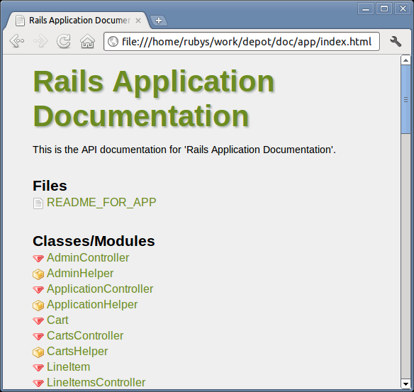

InChapter 3, The Architecture of Rails Applications we introduced models, views, and controllers. Now let’s see how we applied each of these concepts in the Depot application. Then let’s explore how we used configuration, testing, and deployment.
Models are where all of the persistent data retained by your application is managed. In developing the Depot application, we created five models: Cart, LineItem, Order, Product, and User.
By default, all models have id, created_at, and updated_at attributes. To our models, we added attributes of type string (examples: title, name), integer (quan-tity), text (description, address), decimal (price), and foreign keys (product_id, cart_ id). We even created a virtual attribute that is never stored in the database, namely, a password.
We created has_many and belongs_to relationships that we can use to navigate between our model objects, such as from Carts to LineItems to Products.
We employed migrations to update the databases, not only to introduce new schema information but also to modify existing data. We demonstrated that they can be applied in a fully reversible manner.
The models we created were not merely passive receptacles for our data. For starters, they actively validate the data, preventing errors from propagating. We created validations for presence, inclusion, numericality, range, uniqueness, format, and confirmation. (And length too, if you completed the exercises). We created custom validations for ensuring that deleted products are not referenced by any line item. We used an Active Record hook to ensure that an administrator always remains and a transaction to roll back incomplete updates on failure.
We also created logic to add a product to a cart, add all line items from a cart to an order, encrypt and authenticate a password, and compute various totals.
Finally, we created a default sort order for products for display purposes.
Views control the way our application presents itself to the external world. By default, Rails scaffolding provides edit, index, new, and show, as well as a partial named form that is shared between edit and new. We modified a number of these, as well as creating new partials for carts and line items.
In addition to the model backed resource views, we created entirely new views for admin, sessions, and the store itself.
We updated an overall layout to establish a common look and feel for the entire site. We linked in a stylesheet. We made use of templates to generate JavaScript that takes advantage of Web 2.0 technologies to make our website more interactive.
We made use of a helper to determine when to hide the cart from the main view.
We localized the customer views for display both in English and in Spanish.
While we focused primarily on HTML views, we also created plain-text views and Atom views. Not all of the views were designed for browsers: we created views for email too, and those views were able to share partials for displaying line items.
By the time we were done, we created eight controllers: one each for the five models and the three additional ones in order to support the views for admin, sessions, and the store itself.
These controllers interacted with the models in a number of ways: from finding and fetching data and putting it into instance variables to updating models and saving data entered via forms. When done, we either redirected to another action or rendered a view. We rendered views in HTML, JSON, and Atom.
We created filters that were run before selected actions to authorize requests. We placed logic common to a number of controllers into the common base class for all controllers, namely, ApplicationController.
We managed sessions, keeping track of the logged-in user (for administrators) and carts (for customers). We kept track of the current locale used for internationalization of our output. We captured errors, logged them, and informed the user via notices. We paginated orders through the use of the will_paginate plugin.
We also sent confirmation emails on receipt of an order.
While conventions keep to a minimum the amount of configuration required for a Rails application, we did do a bit of customization.
We modified our database configuration in order to use MySQL in production.
We defined routes for our resources, our admin and session controllers, and the root of our website, namely, our storefront. We defined a who_bought member of our products resource in order to access Atom feeds that contain this information.
We created an initializer for i18n purposes and updated the locales information for both English (en) and Spanish (es).
We created seed data for our database.
We created a Capistrano script for deployment, including the definition of a few custom tasks.
We maintained and enhanced tests throughout.
We employed unit tests to validation methods. We also tested increasing the quantity on a given line item.
Rails provided basic tests for all our scaffolded controllers, which we maintained as we made changes. We added tests along the way for things such as Ajax and ensuring that a cart has items before we create an order.
We used fixtures to provide test data to fuel our tests.
Finally, we created an integration test to test an end-to-end scenario involving a user adding a product to a cart, entering an order, and receiving a confirmation email.
|  |
|
Figure 42. Our application’s internal documentation |
We deployed our application to a production-quality web server (Apache httpd) using a production-quality database server (MySQL). Along the way, we installed and configured Phusion Passenger to run our application, Bundler to track dependencies, and Git to configuration manage our code. Capistrano was employed to orchestrate updating the deployed web server in production from our development machine.
We made use of test and production environments to prevent our experimentation during development from affecting production. Our development environment made use of the lightweight SQLite database server and a lightweight web server, most likely WEBrick. Our tests were run in a controlled environment with test data provided by fixtures.